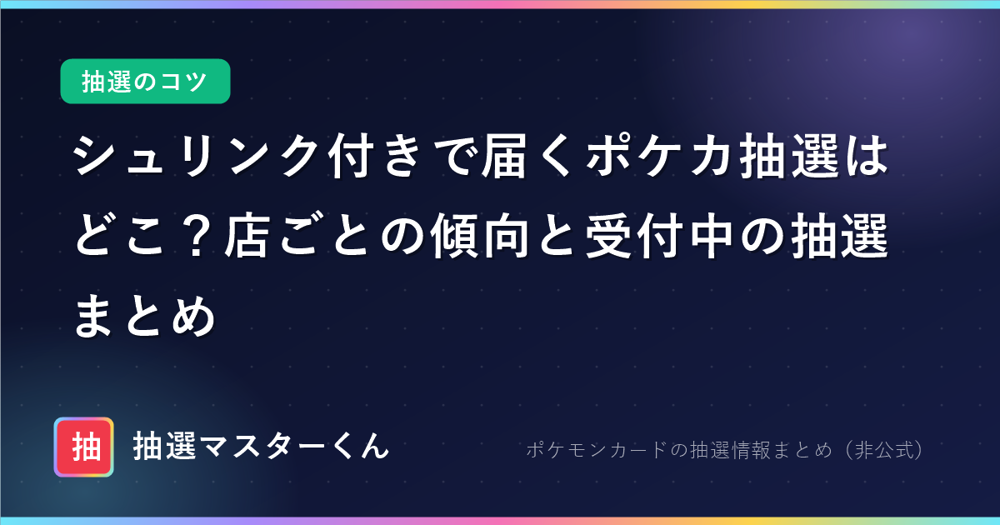

シュリンク付きで届くポケカ抽選はどこ？店ごとの傾向と受付中の抽選まとめ

ポケカの抽選に当たってBOXを受け取ったら、透明なフィルム（シュリンク）が外されていた――そんな経験はありませんか？ じつはBOXをシュリンク付きのまま渡すか、外してから渡すかは、お店ごとに違います。
この記事では、シュリンクが付いたまま届く傾向があるお店、外して渡すお店、そして今受付中の「シュリンク付き」の抽選をまとめました。
この記事の要点
- BOXのシュリンクを付けたまま渡すか外すかは、お店ごとに決めている
- ポケモンセンターオンライン・Amazon・セブンネット・楽天ブックスなどの通販はシュリンク付きの傾向
- 家電量販店やリユース店の店頭販売では、シュリンクを外す・パックだけで渡す例が多い
- 11月21日時点で受付中のシュリンク付き抽選は、フルコンプ・晴れる屋2・トレカプラザ55通販など
- お店の方針は変わることがあるので、応募前に告知ページで必ず確認する
シュリンクとは？なぜ気にする人が多いのか
シュリンクは、BOXの外側をぴったり包んでいる透明なフィルムです。工場から出荷されたままの状態であることの目安になるため、BOXをそのまま保管したい人や、コレクションとして手元に置きたい人には大事なポイントです。
BOXの中には、ふたを開けるときに切る「ペリペリ」（開封テープ）が付いている商品もあります。お店によっては、シュリンクだけでなくこのペリペリまで外して渡すこともあります。
お店によって渡し方は4つに分かれる
抽選で当たったBOXの渡し方は、大きく分けて次の4つです。
| 渡し方 | どういう状態か |
|---|---|
| シュリンク付き | フィルムが付いたまま。出荷時の状態で受け取れる |
| シュリンクなし | レジでフィルムを外してから渡される。箱やペリペリはそのまま |
| ペリペリもなし | フィルムに加えて、開封テープも切られた状態で渡される |
| パックだけ | BOXの箱はお店が回収し、中のパックだけを渡される |
どの渡し方にするかの理由は、お店から公式に説明されていないことがほとんどです。応募するときは、告知ページに「シュリンク」「開封」「BOX回収」などの言葉がないかを見ておくと安心です。
シュリンク付きで届く傾向があるお店
当サイトがこれまでの販売を調べたところ、次のお店はBOXをシュリンク付きのまま渡している例が多く見られました。
- 公式・大手通販：ポケモンセンターオンライン、Amazon（招待リクエスト）、セブンネットショッピング、楽天ブックス、ヨドバシ（オンライン）、Joshin webショップ、イオンオンライン
- 家電・書店チェーン：ヤマダ、三洋堂
- カードショップ・ホビー店：ポケモンカードラウンジ、フルコンプ、晴れる屋2、トレカプラザ55、カードボックス、ドラゴンスター、イエローサブマリン、ヤマシロヤ、ホビーステーション、トレカザウルス、PAO、わんだーぐー
- スーパー・コンビニなど：イトーヨーカドー、ファミリーマート、ゲオ（BOXで売るとき）
通販は、倉庫から段ボールで送られてくるため、シュリンク付きのまま届くことが多い傾向です。同じお店でも、通販と店頭で扱いが違う場合があります（たとえばジョーシンは、Webショップはシュリンク付き、店舗ではシュリンクなしの例が見られます）。
シュリンクを外して渡す傾向があるお店
一方、次のお店では、シュリンクを外したり、箱を回収したりして渡す例が多く見られます。いずれも店頭で受け取る販売が中心です。
| 渡し方 | お店の例 |
|---|---|
| シュリンクなし | ふるいち（古本市場）、エディオン、ジョーシン（店舗）、トイザらス、平和堂、ゲームプラザ元気 |
| ペリペリもなし | 竜のしっぽ |
| パックだけ | ビックカメラ、ゲオ（ハドウシーカーの抽選はBOX回収・パックのみと告知） |
| 店舗によって違う | ホビーゾーン、MINT |
今受付中の抽選でも、お店の告知に渡し方がはっきり書かれているものがあります。
- トレカキャピタル豊田本店（エディオンが運営。オープン記念抽選）：ポケカのBOXは「シュリンク外し」で渡すと告知（締切 11月23日 23:59）
- キデイランド ららぽーと富士見店：ストームエメラルダと30th CELEBRATION BOXは、シュリンクを外して販売すると告知（締切 11月23日 23:59）
- ゲオ：11月30日から受付予定のハドウシーカーの抽選は、BOXを回収してパックだけを渡すと告知
今受付中の「シュリンク付き」の抽選
当サイトの抽選データのうち、BOXがシュリンク付きで届くとされる、11月21日時点で受付中・受付予定の抽選は次のとおりです。締切が近い順に並べています。
| お店 | 商品 | 締切 |
|---|---|---|
| POKÉMON CARD LOUNGE（SHIBUYA TSUTAYA） | ストームエメラルダ | 11月22日（日）23:59 |
| フルコンプ（9店舗から1店を選択） | ハドウシーカー | 11月22日（日）23:59 |
| トレカプラザ55通販 | ハドウシーカー | 11月22日（日）23:59 |
| 駿河屋（通販） | ハドウシーカー | 11月22日（日）23:59 |
| イトーヨーカドー・アリオ（一部店舗） | 30th CELEBRATION BOX | 11月22日（日）23:59 |
| 晴れる屋2 各店 | ハドウシーカー | 11月23日（月）23:59 |
| ガンギ HOBBY SHOP（通販） | VSTARユニバース | 11月25日（水）23:59 |
| ノジマオンライン（招待制） | ポケモンカード各種 | 予告なく終了 |
| Amazon（招待リクエスト） | ハドウシーカー、30th CELEBRATION BOX など | 締切なし |
| ポケモンセンターオンライン（第4回追加抽選） | 30th CELEBRATION BOX など | 12月ごろ実施予定（日程は未発表） |
この中で締切が一番早いのは、11月22日（日）23:59の5件です。ハドウシーカーは11月27日（金）発売で、多くのお店の抽選が今週末に締め切られます。応募条件（会員登録や本人確認書類など）は、抽選一覧の各カードで確認できます。
抽選一覧の「販売形態」でBOX（シュリンク付き）を選ぶと、いつでも最新のシュリンク付き抽選だけに絞り込めます。
シュリンク付きで受け取りたいときのコツ
- 通販の抽選を優先してチェックする：店頭受け取りより、配送の抽選のほうがシュリンク付きの傾向が強めです
- 告知ページの注意事項を読む：「シュリンクを外してお渡し」「BOXは回収」などの一文は、注意事項の中に書かれていることが多いです
- 同じお店でも商品ごとに確認する：拡張パックのBOXはシュリンクを外し、デッキやセット商品はそのまま、というように商品で扱いが違うことがあります
- 受け取り時にお願いしても変わらないことが多い：渡し方はお店のルールで決まっているので、レジで頼んでも対応してもらえないのが普通です
まとめ
BOXのシュリンクを付けたまま渡すかどうかは、お店ごと・販売の方法ごとに違います。おおまかには、通販はシュリンク付き、店頭受け取りはシュリンクなしやパックのみの傾向がありますが、方針は変わることがあります。
- シュリンク付きで受け取りたいなら、通販や「シュリンク付き」の傾向があるカードショップの抽選を中心に
- 応募前に、告知ページの注意事項で渡し方を確認する
- 今週末（11月22日・23日）はハドウシーカーの抽選の締切が集中
出典
- エディオン「トレカキャピタル豊田本店 オープン記念 抽選予約」
- キデイランド ららぽーと富士見店 抽選販売（LivePocket）
- ゲオ「ポケモンカードゲーム 抽選販売のお知らせ」
- ポケモンセンターオンライン「ハドウシーカー BOX」商品ページ（発売日）
「シュリンク付きの傾向」「外して渡す傾向」のお店の分類は、当サイトがこれまでの販売を調べたものです。お店の方針や商品によって変わることがあるので、応募前に各お店の告知で確認してください。
当サイトは非公式のファンサイトです。価格・日程などは記事公開時点の情報なので、最新の情報は公式サイトや各販売店でご確認ください。